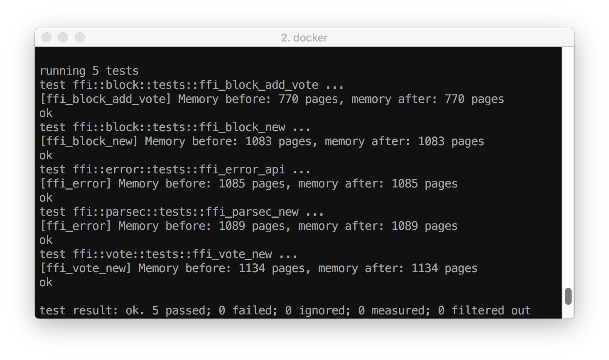
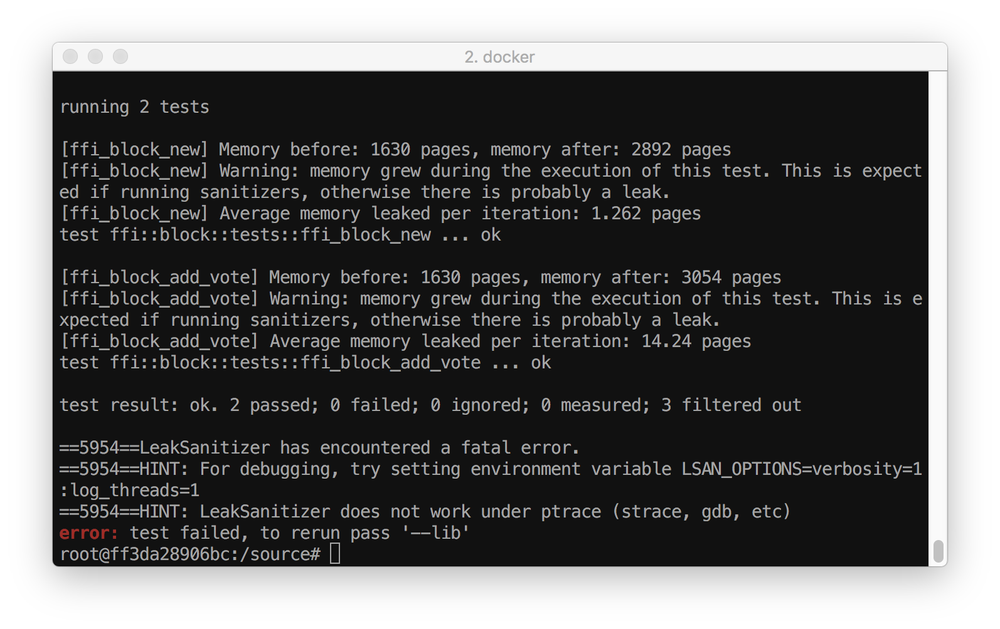
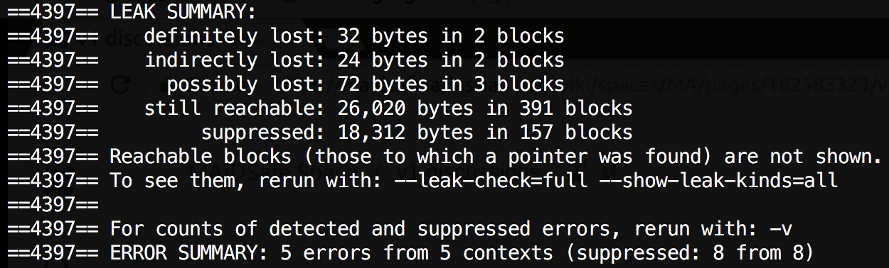
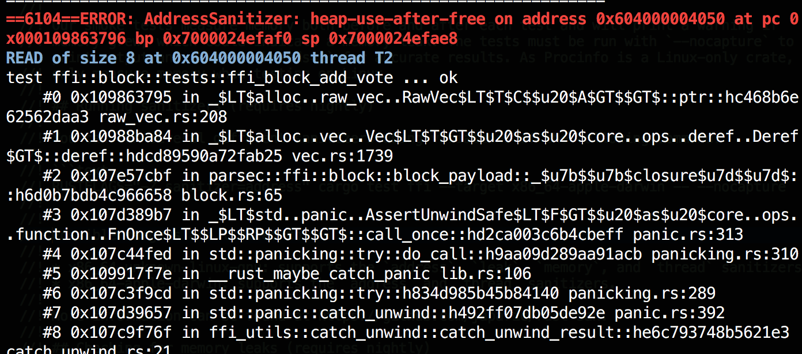
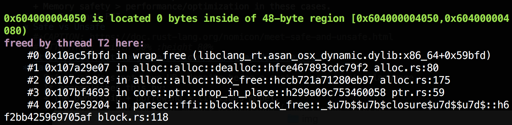
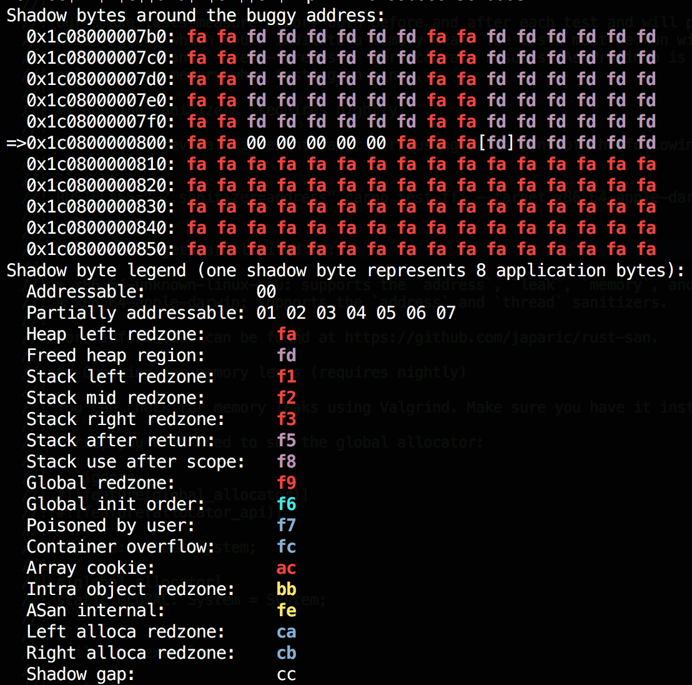

Memory Management in Unsafe Rust
Marcin Swieczkowski
17-08-18
Marcin Swieczkowski
17-08-18
Agenda
- Memory Layout (Background)
- Problems with C
- Enter Rust
- Unsafe Rust and FFI
- Memory Tools
Memory Layout (Background)
Overview

Text section
- Includes executable code and global variables (initialized and uninitialized).
- Designated space does not grow.
The Stack

Common problems
- Stack overflows
- Buffer overflow
The Heap

How it works
- C program requests a memory block of a certain size using
malloc. mallocis the standard allocator.- This memory must be deallocated by calling
free. - If memory is not freed, memory usage will continue to grow for the lifetime of the program.
Handling heap-allocated data
- The C way: manual management
- Error prone: no free, double free, invalid free.
- Dangling pointers
- Garbage collection
- Widely used, in and out of systems languages.
- Invented in 1959 (!)
- The Rust way: ownership
Other
- Not all memory is directly visible to a C program.
- E.g. files are handled through OS or library, program only sees a numeric file handle.
- Resources can leak if not freed.
- Handled in C++ and Rust with RAII (destructors).
Review
Misc Notes
- This layout is an abstraction, specified by C standard.
- Holds irregardless of platform.
- C runs on an abstract machine.
- We didn't cover details e.g. virtual memory, paging, caching, registers, etc.
- May not be reflected in hardware.
Problems with C
Already Mentioned
- Memory leaks.
- Segmentation faults.
- Buffer overflows.
Thread safety
- Prone to data races.
Undefined Behavior
"[…] behavior, upon use of a nonportable or erroneous program construct or of erroneous data, for which this International Standard imposes no requirements"
What is UB?
- Conditions in which the compiler is allowed to do anything, according to the standard.
- Wait, I thought computers were deterministic?
- Adds uncertainty and mental overhead when programming – controversial.
Examples
- Division by zero
- Arithmetic overflow
- Out-of-bounds access
- Ambiguous statements
a[i] = i++; // undefined behavior
- Dereferencing a null pointer
Why?
- Rationale
- Originally was meant to account for architecture differences.
- E.g. different ways of dealing with overflow of integer addition.
- Early compilers did not optimize much if at all, so this is an unforeseen benefit of UB.
- Nowadays relying on platform-specific behavior is dangerous. The compiler can do anything with UB.
- Originally was meant to account for architecture differences.
Signed integer addition
int foo(int x) {
return x+1 > x; // either true or UB due to signed overflow
}
may be compiled as:
foo(int):
movl $1, %eax
ret
More
See https://en.cppreference.com/w/cpp/language/ub#UB_and_optimization
Enter Rust
"Rust is a systems programming language that runs blazingly fast, prevents segfaults, and guarantees thread safety." - rustlang.org
Rust vs. C
- Performance close to C.
- No need to worry about manual memory management.
- No UB in safe Rust.
- Different philosophy: for optimizations, give compiler as much info as possible.
Rust Memory Model
- Layout is similar to C.
- Also includes:
- Ownership
- Bound resources freed at end of scope.
- Solves memory leaks.
- Borrowing
- Solves data races.
- Lifetimes
- Solves segfaults (use-after-free).
- Ownership
Rust Memory Model
This is all enforced at compile-time. No run-time cost (unlike GC).
Does have run-time checks, including:
- out-of-bounds access -> panic! (solves buffer overflows)
- arithmetic overflow -> depends!
- Memory safety > performance/optimization in these cases.
Unsafe Rust and FFI
Safe vs Unsafe
Safe vs Unsafe
- Safe Rust does not have UB, despite being a systems programming language.
- It accomplishes this by:
- The ownership + borrowing + lifetimes model.
- Providing a safe API for memory allocations (
Box,Vecetc.). - Not allowing the dereference of a raw pointer or access to mutable static variables.
Safe vs Unsafe
- Unsafe Rust allows you to:
- Dereference a raw pointer
- Call an unsafe function or method
- Access or modify a mutable static variable
- Implement an unsafe trait
- Does not turn off borrow checker, but can get around it using pointers instead of references.
Why?
- Unsafe allows you to:
- Perform optimizations in space and performance.
- Circumvent safety checks in cases where you believe the code is correct.
- Directly call an unsafe API in a way that you believe is safe, so you can provide a safe interface.
Examples of memory-buggy "safe" code
"Memory unsafety is doing something with invalid data, a memory leak is not doing something with valid data."
https://huonw.github.io/blog/2016/04/memory-leaks-are-memory-safe/
Memory leaks are considered "safe" and possible in Rust (e.g. mem::forget).
FFI
What if you want to talk to another language?
FFI in Rust
- Need to use native C types.
- Difference between native
charand FFIc_char.
- Difference between native
- Need to use pointers. References are a Rust concept.
- Need to catch panics (undefined behavior across FFI boundary).
Example
#[no_mangle]
pub extern fn hello_rust() -> *const u8 {
"Hello, world!\0".as_ptr()
}
PARSEC FFI
- Requirements
- Synchronous.
- Must expose all functionality from native Rust PARSEC API.
The way it works
- Output parameters.
- Error codes.
- Resource handles.
PublicId Example
#[no_mangle]
pub unsafe extern "C" fn public_id_from_bytes(
bytes: *const u8,
bytes_len: usize,
o_public_id: *mut *const PublicId,
) -> i32 {
utils::catch_unwind_err_set(|| -> Result<_, Error> {
let public_id = slice::from_raw_parts(bytes, bytes_len);
let peer_id = PeerId::new(str::from_utf8(public_id)?);
*o_public_id = Box::into_raw(Box::new(PublicId(peer_id)));
Ok(())
})
}
PublicId Example
#[no_mangle]
pub unsafe extern "C" fn public_id_as_bytes(
public_id: *const PublicId,
o_bytes: *mut *const u8,
o_bytes_len: *mut usize,
) -> i32 {
utils::catch_unwind_err_set(|| -> Result<_, Error> {
let bytes = (*public_id).0.as_bytes();
*o_bytes = bytes.as_ptr();
*o_bytes_len = bytes.len();
Ok(())
})
}
PublicId Example
#[no_mangle]
pub unsafe extern "C" fn public_id_free(public_id: *const PublicId) -> i32 {
utils::catch_unwind_err_set(|| -> Result<_, Error> {
let _ = Box::from_raw(public_id as *mut PublicId);
Ok(())
})
}
Undefined behavior in unsafe Rust
Examples
- Data races.
- Dereferencing a null or dangling raw pointer.
- Reads of undef (uninitialized) memory.
See https://doc.rust-lang.org/beta/reference/behavior-considered-undefined.html
Unsafe
- Writers of unsafe code must ensure that safe code cannot exhibit UB.
- For example, safe interfaces in the standard library rely on "unsafe" implementations under the hood.
- e.g.
Vec, the standard "dynamic array" type in Rust. Allocates on heap. Veccontains unsafe code to perform allocations.- We trust that the safe interface it provides is solid and does not leak UB.
- e.g.
mem::initialized and related UB
unsafe {
// Allocate a value, of type required by FFI function.
let mut output: T = mem::uninitialized();
// Call FFI function.
let res = f(&mut output);
// Check error code.
if res == 0 {
Ok(output)
} else {
Err(res)
}
}
mem::zeroed and related UB
unsafe {
let mut output: T = mem::zeroed();
// Call FFI function.
let res = f(&mut output);
if res == 0 {
Ok(output)
} else {
Err(res)
}
}
Memory Tools
Why?
- As we have seen, FFI (and other unsafe Rust) is error-prone and hard to reason about, due to UB.
- Anytime we work with raw pointers, memory errors (dangling pointers, invalid dereferences) are possible.
- Luckily, many of the same tools developed for C will work for Rust!
The Easy Way
Compare memory before and after!

The Easy Way
let payload = b"hello world";
unsafe {
let mut block = mem::zeroed();
assert_ffi!(block_new(
payload.as_ptr(),
payload.len(),
ptr::null(),
ptr::null(),
0,
&mut block,
));
// assert_ffi!(block_free(block as *mut _));
}
The Easy Way
let memory_before = unwrap!(procinfo::pid::statm_self()).resident;
// Run the function some number of times.
for _ in 1..num_iterations {
f();
}
let memory_after = unwrap!(procinfo::pid::statm_self()).resident;
The Easy Way

Valgrind
What is it?
- Open source debugging framework.
- Suite of dynamic analysis tools such as checkers and profilers.
- Takes compiled binary code, works with many languages (including Rust).
Memcheck
- Default tool. Memory debugger.
- Inserts instrumentation around all instructions.
- Keeps track of validity and addressability of heap memory.
- Replaces standard memory allocator, inserts memory guards.
- 20-30x slowdown in performance.
Memcheck
It can find the following:
- Use of uninitialized memory
- Reading/writing memory after it has been free'd
- Reading/writing off the end of malloc'd blocks
- Memory leaks
How to use it?
Set system allocator (valgrind doesn't work with jemalloc):
use std::alloc::System;
#[global_allocator]
static GLOBAL: System = System;
Build what you want to check (e.g. tests):
cargo test ffi --no-run
Run valgrind:
valgrind --leak-check=full executable
Example

Sanitizers
Definition
- Dynamic (run-time) memory checkers.
- Code must be compiled using a sanitizer, unlike Valgrind.
- Some sanitizers are available to compile Rust code as well.
- Only the ones built on LLVM (Rust's compiler backend) will work.
Examples
- Address sanitizer: detects out-of-bounds access and use-after-free.
- Leak sanitizer: detects memory leaks.
- Memory sanitizer: detects reads of uninitialized memory.
- Thread sanitizer: detects data races.
How to use them?
RUSTFLAGS="-Z sanitizer=address" cargo test ffi --target x86_64-apple-darwin -- --nocapture
Possible targets are limited to:
- x8664-unknown-linux-gnu: supports the
address,leak,memory, andthreadsanitizers. - x8664-apple-darwin: supports the
addressandthreadsanitizers.
Example
let payload = b"hello world";
unsafe {
let mut block = mem::zeroed();
assert_ffi!(block_new(
payload.as_ptr(),
payload.len(),
ptr::null(),
ptr::null(),
0,
&mut block,
));
assert_ffi!(block_free(block as *mut _));
let payload_output = unwrap!(utils::get_vec_u8(|output, len| block_payload(
block, output, len
)));
}
Example

Example

Example

Other tools
proptest
- Try to trigger panics by passing a wide range of values to functions.
- Errors like arithmetic overflow or out-of-bounds access can be found.
Examples of bugs found with this tech: https://huonw.github.io/blog/2016/04/myths-and-legends-about-integer-overflow-in-rust/#myth-the-checks-find-no-bugs
fuzzing
- Try to trigger panics by passing in large amounts of data.
- Uses random data (possibly mixed with meaningful data from a corpus).